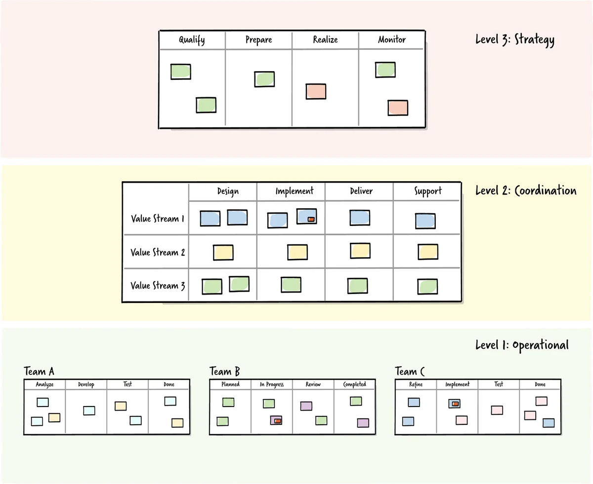

What this resource is for
AI-accelerated delivery does not eliminate the need for cross-team coordination — it increases it. When individual teams move faster, the dependencies between them become more frequent and more consequential. Coordination mechanisms that were adequate at a lower tempo start to break down: handoffs that used to happen weekly now need to happen daily, and ad-hoc agreements that worked when everything moved slowly become sources of bottleneck and misalignment. Choosing the right coordination pattern for each dependency — and operating at the right level of organisational altitude — is one of the highest-leverage interventions available to engineering leaders in this environment.
Once you have a clear picture of your team structure and dependencies, the next question is how teams coordinate — what mechanisms, meetings, agreements, and forums govern the flow of work across team boundaries. Not all coordination mechanisms are appropriate for all situations. Using the wrong pattern creates either too much coordination overhead (slowing everyone down) or too little (allowing misalignment to propagate until it becomes a crisis). This resource covers the main coordination patterns available for cross-team work, and the Flight Levels model — a framework for thinking about coordination at different organisational altitudes.
What coordination patterns are for
A coordination pattern is a repeatable structure for managing the flow of work and information across team boundaries. Patterns exist because coordination problems tend to recur in similar forms, and solving them from scratch each time is inefficient. A well-chosen pattern gives a team a starting point — a structure that has been tested in similar contexts — which they can adapt to their specific situation.
The most important variable in choosing a coordination pattern is the nature of the dependency being coordinated. Dependencies that are predictable, well-defined, and relatively stable are best managed with formal, lightweight mechanisms — service agreements, shared cadences, documented interfaces. Dependencies that are uncertain, novel, or rapidly changing require more bandwidth — direct collaboration, embedded roles, or joint ownership. Using a formal, low-bandwidth mechanism for a high-uncertainty dependency leads to misalignment and surprises. Using a high-bandwidth collaboration mode for a stable, well-understood dependency is simply waste.
Common coordination patterns
Team API / interface agreements are explicit contracts between teams that define what one team provides to another, under what conditions, on what timeline, and through what communication channel. The term "team API" is borrowed from software engineering — just as a software API defines a stable interface through which systems communicate, a team API defines a stable interface through which teams interact. A team API might specify: what requests the team accepts, in what format, with what expected response time; what the team's current priorities are; how to escalate if the standard process is not working; and what the team is not responsible for. Interface agreements dramatically reduce the ad-hoc negotiation that teams without them spend enormous amounts of time on.
Cross-team synchronisation forums are regular meetings that bring representatives from multiple teams together to surface dependencies, identify blockers, and coordinate on upcoming work. The most common form in agile organisations is the "Scrum of Scrums" — a brief weekly meeting between team leads or representatives. The risk with cross-team forums is that they become reporting sessions rather than coordination sessions, consuming time without producing useful decisions. A well-run cross-team forum is action-oriented: it surfaces what needs to happen, who will do it, and by when.
Embedded roles are individuals who work across team boundaries — either permanently assigned to span two teams, or temporarily embedded in a team that needs specialised capability. Embedding is a high-bandwidth pattern — it puts direct communication in the same physical or virtual space as the work. It is appropriate when a dependency is intensive, urgent, or involves knowledge that is difficult to transfer through documentation alone. The risk is that embedded roles create invisible dependencies — when the embedded person moves on, the coordination breaks down.
Joint planning sessions bring teams together at a planning boundary (beginning of a quarter, PI planning, etc.) to align on their interdependencies before work begins. This is a proactive pattern — it addresses dependencies at design time rather than discovering them at execution time. The investment in joint planning is typically recovered many times over in reduced mid-cycle surprises.
Community of practice is a voluntary forum for people across team boundaries who share a discipline — engineering, design, data science — to share knowledge, develop standards, and build relationships that make cross-team coordination easier. Communities of practice do not coordinate specific work items; they build the shared language and relationships that make coordination easier when it is needed.
Flight Levels
The Flight Levels model, developed by Klaus Leopold, provides a framework for thinking about where in an organisation coordination should happen — and what kind of coordination is appropriate at each level. It borrows the aviation metaphor of altitude: different altitudes give you different views, and effective coordination requires being at the right altitude for the question you are trying to answer.

Flight Level 1 is the level of individual teams — the altitude of day-to-day work. At this level, you can see individual tasks, stories, and work items. The coordination happening here is within-team: who is doing what, what is blocked, what is ready to be worked on. Kanban boards, daily standups, and sprint planning operate at Flight Level 1. The field of vision is wide in detail and narrow in scope.
Flight Level 2 is the level of cross-team coordination — the altitude at which dependencies between teams become visible. At this level, you can see how work flows across team boundaries: where it gets stuck, where it accelerates, where team interfaces are creating overhead. The coordination happening at Flight Level 2 is between teams, not within them. A Flight Level 2 board shows the progress of capabilities or initiatives that span multiple teams, making the dependencies and blockers visible in one view. This is the level at which most of the coordination work in the Cross-Team Collaboration module operates.
Flight Level 3 is the level of organisational strategy — the altitude at which portfolio-level decisions are made. At this level, you can see which initiatives the organisation is investing in, how those investments are distributed across strategic priorities, and whether the portfolio of work is aligned with organisational goals. The coordination happening at Flight Level 3 is about capacity allocation, strategic sequencing, and trade-off decisions between major initiatives.
The critical insight: altitude mismatch
The most common misuse of coordination mechanisms is altitude mismatch — operating at the wrong level for the question being asked. This manifests in two directions.
Too low is when coordination meetings that should be operating at Flight Level 2 (cross-team flow) get pulled down to Flight Level 1 (individual task-level detail). The meeting fills with status reporting and task-level conversation, and the cross-team dependencies that need to be surfaced and resolved never come up. Leaders who are primarily interested in the detail of individual work items tend to drive meetings to Flight Level 1, even when the coordination problem lives at Level 2 or 3.
Too high is when Flight Level 3 thinking — strategic portfolio allocation — is applied to questions that live at Flight Level 2 or 1. This produces abstract strategic discussions disconnected from the day-to-day coordination reality, and action items that are too broad to drive specific change.
A practical rule: if you are discussing individual tasks, work items, or stories, you are at Flight Level 1. If you are discussing how work flows across team boundaries, you are at Flight Level 2. If you are discussing strategic priorities and resource allocation, you are at Flight Level 3. Knowing which level a conversation should be at — and having the discipline to stay there — dramatically improves the quality of coordination.
Selecting coordination patterns for your context
Choosing coordination patterns is not a one-size-fits-all exercise. The right pattern depends on the nature of the dependencies, the maturity of the teams involved, the pace of change in the work, and the organisation's current coordination capabilities.
As a starting point, use team API agreements for stable, well-understood dependencies — they are low-overhead once established. Use cross-team synchronisation forums for dependencies that require ongoing coordination but do not need daily contact. Use embedded roles or joint planning for dependencies that are novel, high-risk, or rapidly evolving. Use community of practice to build the shared language and relationships that make all other coordination mechanisms work better.
The dependency map you build in the course is the input to this selection process. For each significant dependency identified in the map, the question is: what is the right pattern for managing this dependency at this moment, given the nature of the dependency and the current state of the teams involved?
Further reading
- Leopold, K. — Rethinking Agile: Why Agile Teams Have Nothing To Do With Business Agility (the primary source for the Flight Levels model, available also via flightlevels.io)
- Reinertsen, D. — The Principles of Product Development Flow (covers queuing theory and coordination cost in depth)
- Galbraith, J.R. — Designing Organizations (the organisational design foundation for team API and interface concepts)